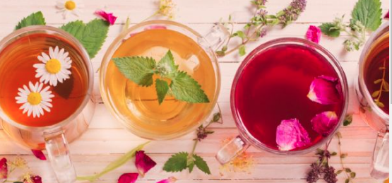

La infusión es el proceso de extracción de compuestos químicos o sabores del material vegetal en un solvente como agua, aceite o alcohol, al permitir que el material permanezca suspendido en el solvente a lo largo del tiempo. Una infusión es también el nombre del líquido resultante.

La tizana es una bebida típica de la gastronomía venezolana que consiste en varias frutas cortadas en pedazos, las cuales suelen venir mezcladas con "zumo" o "jugo" de naranja, de sandía o granadina, esta última le da una característica tonalidad rojiza.
El zumo o jugo de frutas es una sustancia líquida extraída de las frutas, generalmente al exprimirlas por presión, sin embargo, puede incluir un conjunto de procesos intermedios como la: cocción, molienda o centrifugación del producto original.
Un condimento es un ingrediente o mezcla de ingredientes que se usa para dar buen sabor a la comida. Los ejemplos incluyen sal, mostaza, pimienta, paprika, salsa de tomate, mayonesa, salsa Worcestershire, salsa de soya, sambal, piccalilli, especias en general, adobos, aceite de oliva, vinagre y azúcar.